휴대폰에서 이 페이지를 연 채로 아래 순서대로 하세요. 휴대폰마다 문구가 조금 다를 수 있습니다.
RyoranMacro.apk 받기약 18MB · 늘 최신 버전
위의 RyoranMacro.apk 받기를 누릅니다.
카카오톡에서 링크를 열었다면 받기가 안 될 수 있습니다. 오른쪽 위 ⋮(또는 ⋯)를 누르고 다른 브라우저로 열기를 고른 뒤, 열린 Chrome에서 다시 받으세요.
휴대폰 하나로 요란 비서를 쓰는 방법입니다…
「파일을 다운로드할까요?」 또는 「이 유형의 파일은 기기에 손상을 줄 수 있습니다」가 뜨면 다운로드를 누릅니다.
앱 스토어 밖에서 받는 APK 파일에는 늘 나오는 안내입니다. 요란 비서는 이 홈페이지·GitHub에서만 받으세요.
이 유형의 파일은 기기에 손상을 줄 수 있습니다.
RyoranMacro.apk (18MB)
다운로드가 끝나면 아래에 뜨는 열기를 누릅니다.
놓쳤다면 알림 표시줄의 「다운로드 완료」 알림을 누르거나, 내 파일(파일) 앱 → 다운로드에서 RyoranMacro.apk를 누르세요.
삼성 갤럭시에서 보안 위험 자동 차단이 켜져 있으면 파일을 열 때 이 창이 뜨고 설치가 막힙니다. 이때는 다음 단계의 「이 출처 허용」 창도 뜨지 않습니다.
예전 갤럭시에서는 이름이 「자동 차단 기능」입니다. 기종에 따라 메뉴 이름이 조금 다를 수 있어요. 다시 켜면 요란 비서의 자동 업데이트(새 버전 설치)도 막히니, 자동 업데이트를 쓰려면 꺼 둔 채로 두세요.
같은 파일을 여러 번 받으면 RyoranMacro-1.apk·-2.apk처럼 번호가 붙습니다. 번호가 가장 큰 것(가장 나중에 받은 것)을 열면 되고, 설치한 뒤에는 모두 지워도 됩니다.
보안 위험 자동 차단에서 출처를 알 수 없는 앱의 설치를 차단합니다. 끄려면 [설정 > 보안 및 개인정보 보호 > 보안 위험 자동 차단]으로 이동하세요.
「보안을 위해 이 출처의 알 수 없는 앱을 설치할 수 없습니다」가 뜨면 설정을 누릅니다.
열린 화면에서 이 출처 허용(또는 「알 수 없는 앱 설치 허용」)을 켜고, 뒤로를 누르면 설치 화면으로 돌아갑니다.
파일을 연 앱(Chrome·내 파일 등)에 대해 한 번만 허용하면 됩니다. 다음 업데이트 때는 요란 비서 자신에 대해 같은 허용을 한 번 묻습니다.
보안을 위해 휴대전화에서 이 출처의 알 수 없는 앱을 설치할 수 없습니다. 설정에서 변경할 수 있습니다.
「요란 비서 — 이 앱을 설치하시겠습니까?」에서 설치를 누릅니다.
「Play 프로텍트」 창이 뜨면 (스토어에 없는 앱이라 나올 수 있음) 세부정보 더보기 → 무시하고 설치를 누릅니다. 「앱 검사」를 권하면 검사하지 않음을 눌러도 됩니다.
설치가 끝나면 열기를 누릅니다. 홈 화면·앱 목록에도 요란 비서 아이콘이 생깁니다.
이 앱을 설치하시겠습니까?
이 앱의 개발자를 Play 프로텍트가 알지 못합니다…
앱을 처음 열면 「요란 비서에서 알림을 보내도록 허용하시겠습니까?」가 뜹니다. 허용을 누르세요.
알림 표시줄의 「요란 비서」 알림으로 지금 하는 일과 다음 예약을 보고, 요란 비서를 끄고, 새 버전을 설치합니다 (알림창 보는 법). 실수로 「허용 안함」을 눌렀다면 알림이 안 보여요를 보세요.
관리자에게 받은 아이디와 비밀번호를 넣고 로그인을 누릅니다. PC와 같은 아이디입니다.
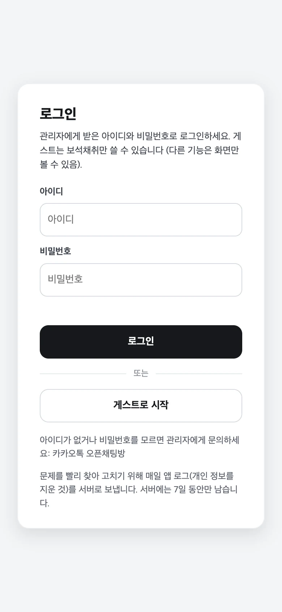
요란 비서가 어느 게임 계정을 돌릴지 알려 주는 단계입니다. 계정마다 한 번만 하면 됩니다. 로그인하기 전 계정은 예약을 실행하지 않습니다.
아래 탭의 계정 관리를 누르고, 「로그인 확인 전」이라고 나온 계정의 로그인을 누릅니다.
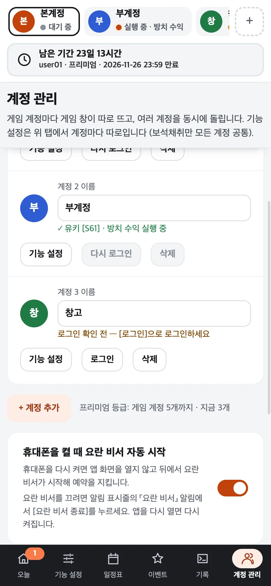
게임 화면이 뜨고 G123 계정 전환 창이 열립니다. 평소 쓰던 방법(Google · Apple · Passkey · 전화번호 …)으로 로그인하세요.
처음 열린 게임 창은 G123이 게스트 계정을 새로 만들어 보여 주지만, 로그인하면 원래 계정으로 바뀝니다. Google 로그인 창은 게임 화면 위에 따로 열립니다.
평소 로그인하던 방법을 고르세요
로그인이 끝나면 휴대폰 뒤로 버튼으로 게임 화면을 닫습니다. 계정 관리에 ✓ 캐릭터 이름 [서버]가 보이면 끝입니다. 이제 그 계정의 예약이 돌기 시작합니다.
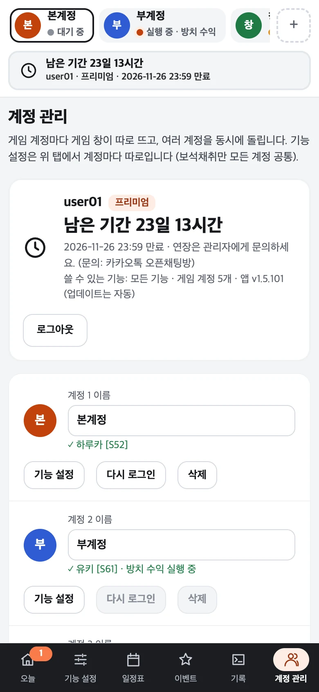
휴대폰이 배터리를 아끼려고 뒤에서 도는 앱을 멈추면 예약을 놓치고, 화면이 꺼진 동안 게임 창이 뜨지 않습니다(기록에 「게임이 4분 안에 로드되지 않음」). 요란 비서를 배터리 제한에서 빼 주세요.
앱 아이콘을 길게 누르고 ⓘ 애플리케이션 정보를 눌러도 같은 화면이 열립니다.
다른 제조사(샤오미·LG 등)도 「자동 시작」·「백그라운드 실행 허용」 같은 이름의 설정이 있으면 요란 비서를 허용해 주세요.
처음 설치하면 모든 기능이 꺼져 있습니다(이미 쓰던 설정은 업데이트해도 그대로, 이벤트 기능 「지혜 대결 퍼즐 대전」만 예외로 켜짐). 아래 탭의 기능 설정에서 기능마다 하는 일을 보고 쓸 기능의 스위치를 켭니다. 기능 이름을 누르면 그 기능의 설정(시각·횟수·다이아 사용 등)이 열리고, ‹ 기능 목록이나 휴대폰 뒤로로 목록에 돌아옵니다.
무엇을 켤지 모르겠으면 PC 설명서의 처음 설정 추천을 보세요. 기능마다 하는 일은 기능 안내에 있습니다.
설정은 바로 저장됩니다. 기능 설정 아래 다른 계정에도 적용으로 같은 설정을 다른 게임 계정에 복사할 수 있습니다.
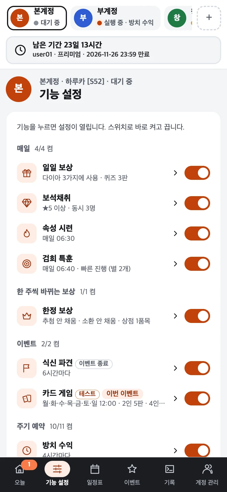
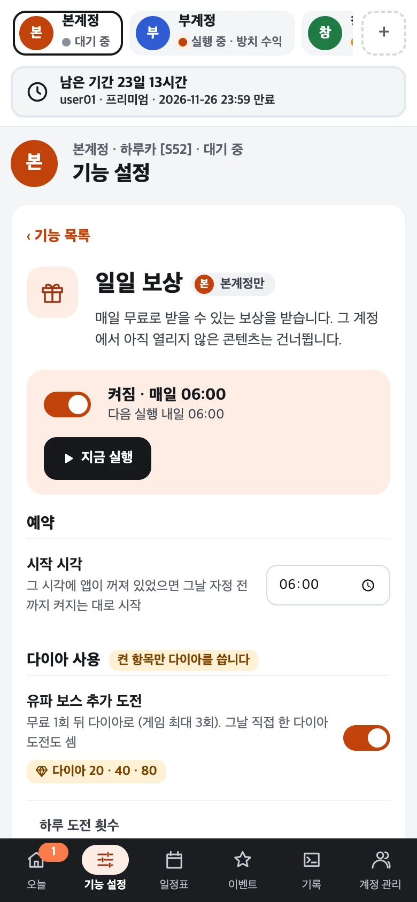
요란 비서가 켜져 있는 동안 휴대폰 알림 표시줄(화면 위에서 아래로 쓸어내린 곳)에 「요란 비서」 알림이 늘 있습니다. 이 알림이 있으면 요란 비서가 뒤에서 예약을 지키고 있는 것입니다.
| 알림 제목 | 뜻 |
|---|---|
| 대기 중 | 지금 도는 기능이 없고 다음 예약을 기다리는 중 (정상) |
| 계정 1 ○○ 실행 중 | 그 계정에서 그 기능을 돌리는 중. 끝나면 다시 「대기 중」 |
| 2개 실행 중 | 여러 계정에서 동시에 도는 중 |
| 알림이 없음 | 요란 비서가 꺼져 있음 → 앱을 열면 다시 켜집니다 (예약이 안 돌아요) |
알림을 옆으로 밀어 지워도 요란 비서는 계속 돕니다. 다만 지우지 않고 두는 편이 지금 상태를 보기 쉽습니다. 다음 예약에는 로그인하기 전 계정의 예약은 나오지 않습니다.
알림 표시줄의 「요란 비서」 알림에서 요란 비서 종료를 누르면 요란 비서와 실행 중인 기능이 모두 멈추고 알림이 사라집니다. 꺼져 있는 동안에는 예약을 하지 않습니다.
앱 화면을 뒤로·홈으로 닫거나 최근 앱 목록에서 지우는 것만으로는 꺼지지 않습니다 — 요란 비서는 뒤에서 계속 돕니다.
요란 비서 앱을 다시 열면 자동으로 켜집니다. 앱이 열린 채로 껐다면 「요란 비서가 꺼져 있습니다」 화면의 다시 시작을 누르세요. 놓친 예약은 켜지는 대로 이어서 합니다.
요란 비서가 꺼져 있습니다 (알림의 [요란 비서 종료]). 예약을 지키려면 다시 시작하세요.
다시 시작새 버전이 나오면 앱이 받아 둡니다. 안드로이드 12 이상이면 기능이 끝난 뒤 저절로 설치하고(v1.5.110부터, 업데이트), 자동으로 설치할 수 없거나 v1.5.109 이하이면 「요란 비서 새 버전 v…」 알림을 띄웁니다. 앱 화면 위쪽에도 같은 안내가 나옵니다.
설치하는 동안 요란 비서가 잠깐 멈추므로, 기능이 도는 중이면 끝난 뒤(알림이 「대기 중」일 때) 누르세요. 바로 받고 싶으면 지금 바로 업데이트를 보세요.
이 앱을 업데이트하시겠습니까?
아래 탭으로 화면을 옮깁니다: 오늘 · 기능 설정 · 일정표 · 이벤트 · 기록 · 계정 관리. 맨 위에는 게임 계정 탭(누르면 그 계정으로 바뀜)과 남은 이용 기간이 늘 보입니다. 화면은 휴대폰의 다크 모드를 따릅니다.
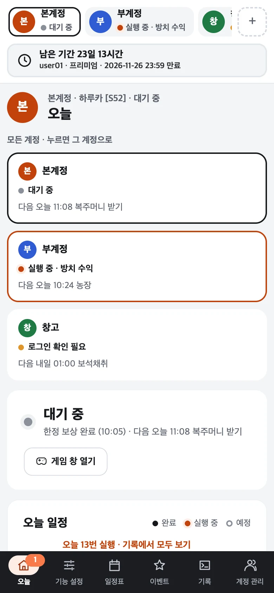
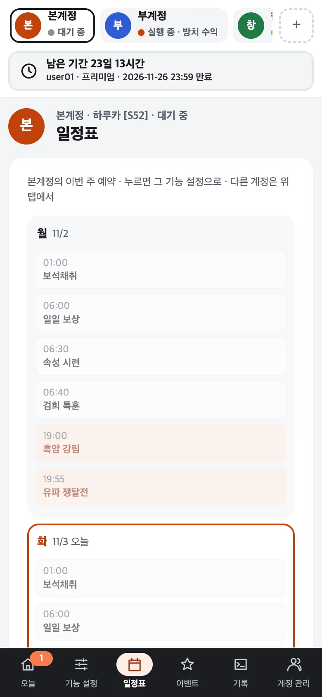
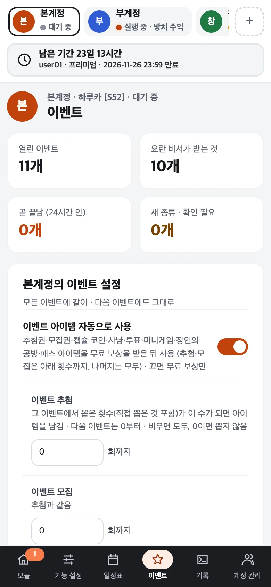
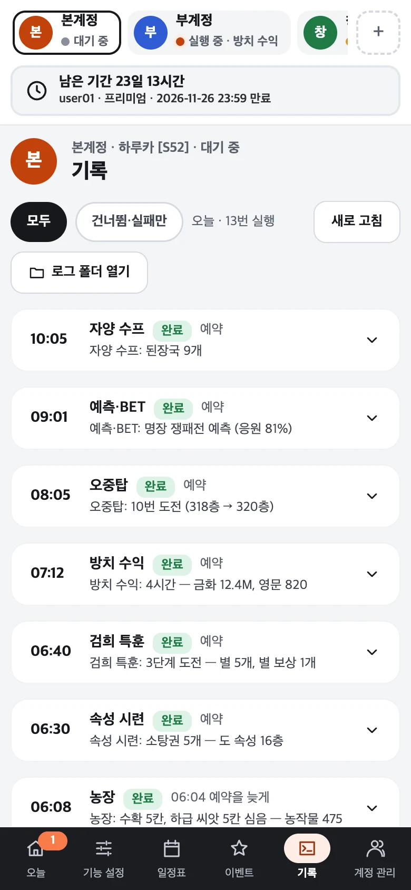
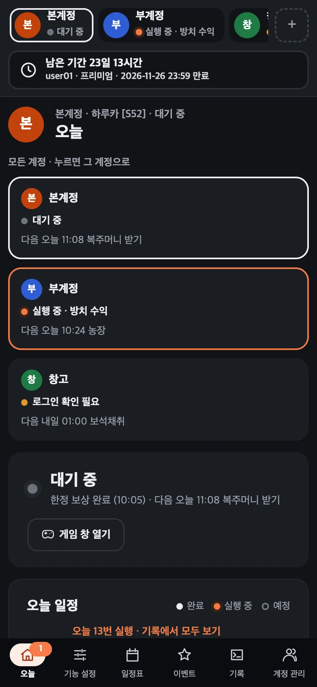
각 화면에서 하는 일은 PC와 같습니다 — 사용설명서의 화면 설명을 보세요. 이미지를 누르면 크게 볼 수 있습니다.
오늘 화면의 게임 창 열기를 누르면 요란 비서가 쓰는 게임 화면을 볼 수 있습니다. 휴대폰 뒤로 버튼으로 닫습니다.
앱이 켜고 30초 뒤, 그 뒤로는 1시간마다 새 버전을 확인해 받아 둡니다. 안드로이드 12 이상이고 "이 출처의 앱 설치 허용"이 켜져 있으면, PC처럼 실행 중인 기능이 끝난 뒤(15분 안에 경기가 있으면 경기 뒤) 확인 창 없이 자동으로 설치하고 요란 비서가 다시 켜집니다(v1.5.110부터). 게임 화면을 화면에 띄워 보고 있는 동안에는 설치를 미룹니다. 30분 넘게 미뤄지면(실행 중인 기능이 계속 돌면 3시간) 진행 상황 알림에 「새 버전 vX · 게임 화면을 닫으면 설치」가 뜨고, 누르면 바로 설치합니다(v1.5.114부터). 새 버전을 받았는지, 설치를 기다리거나 못 하는 까닭은 계정 기록에 한 줄씩 남습니다(설치에 실패하면 안드로이드가 알려 준 상태도, v1.5.119부터). 자동으로 설치할 수 없으면(안드로이드 11 이하, 허용이 꺼짐, 휴대폰이 확인 창을 요구함) 설치할 때까지 진행 상황 알림에 「새 버전 설치 필요 · 눌러서 설치」가 떠 있고 새 버전 알림을 3시간마다 다시 띄웁니다. 알림이나 앱 위쪽 안내(「지금 설치」)를 누르면 안드로이드 12 이상은 확인 창 없이 바로 설치합니다(휴대폰이 확인을 요구할 때만 설치 확인 창). 설치 확인 창이 열려 있으면 자동 설치는 그 창의 답을 기다립니다(v1.5.123부터, 그 전에는 자동 설치가 먼저 끝나 빈 확인 창이 게임 화면을 가린 채 남기도 했습니다). 갤럭시에서 자동으로 설치되지 않으면 휴대폰 설정 앱 → 보안 및 개인정보 보호의 보안 위험 자동 차단(예전 이름 「자동 차단 기능」)이 켜져 있는지 확인하세요. 켜져 있으면 새 버전 설치가 막힙니다(끄는 법). 경기 2시간 전에는 「꼭 확인할 일」 알림(소리·화면 위 팝업)을 한 번 띄워, 밤에 나온 버전을 경기 전까지 놓치지 않게 합니다(v1.5.119부터, 그 전에는 하루 한 번).
새 버전을 받지 못하면(GitHub 연결·받기·저장 공간 등) 그 까닭을 계정 기록에 하루 한 번 남기고, 3번 연속이면 진행 상황 알림에 「새 버전 vX 받기 실패」가 뜹니다. 요란 비서 맨 위 안내를 누르면 바로 다시 받습니다(누르지 않아도 1시간마다 다시 받음, v1.5.119부터). 이때도 경기 2시간 전 「꼭 확인할 일」 알림이 뜹니다.
로그인한 요란 비서는 등급을 확인할 때 이 휴대폰의 업데이트 상태 한 줄(지금 버전, 새 버전을 받았는지, 받기·설치를 못 한 까닭)을 함께 보냅니다. 업데이트가 안 될 때 관리자가 까닭을 보고 도와드리기 위한 것입니다(v1.5.127부터).
일부 안드로이드 휴대폰(주로 11~12, Android System WebView가 오래된 경우)에서 앱이 열리자마자 꺼지던 문제는 v1.5.111에서 고쳤습니다. 그 전 버전이 켜지지 않으면 앱을 열자마자 꺼져요를 보세요.
최소 버전: 관리자가 정한 버전보다 낮은 앱은 기능을 실행하지 않고 화면 맨 위에 「이 버전은 더 이상 동작하지 않습니다」 안내를 띄웁니다. 업데이트는 막지 않으니 새 버전이 설치되면 바로 다시 동작합니다. 막힌 동안은 새 버전을 10분마다 확인하고, 실행 중인 기능만 없으면 경기 시간과 상관없이 바로 업데이트합니다(v1.5.110부터).
직접 받아 설치해도 됩니다. RyoranMacro.apk를 받아 열고 업데이트를 누르면 설정을 그대로 둔 채 새 버전으로 바뀝니다.
지금 버전은 계정 관리의 「앱 v…」에서 볼 수 있습니다. 바뀐 점은 릴리즈에 있습니다.
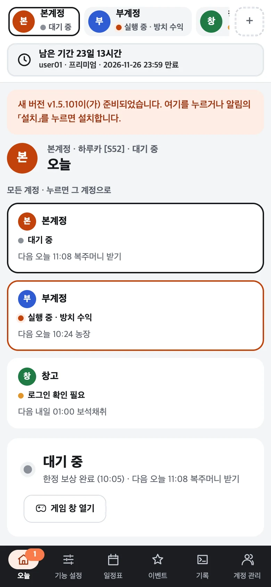
기본으로 켜져 있어, 휴대폰을 다시 켜면 앱 화면을 열지 않아도 요란 비서가 뒤에서 시작해 예약을 지킵니다.
끄려면 계정 관리 아래쪽의 휴대폰을 켤 때 요란 비서 자동 시작 스위치를 끕니다. 끄면 앱을 열 때 시작하고, 놓친 예약은 그때 이어서 합니다.
업데이트 뒤에는 이 설정과 상관없이 늘 다시 켜집니다.
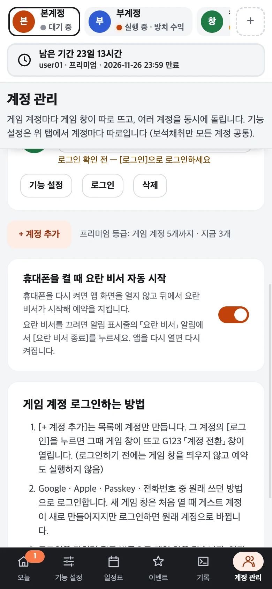
문제가 있을 때 로그 파일을 보내 주시면 원인을 바로 찾을 수 있습니다.
2026-11-08.log)을 길게 누르고 공유 → 카카오톡으로 보냅니다.일부 안드로이드 휴대폰(주로 11~12, Android System WebView가 오래된 경우, 예: 갤럭시 노트10+)에서 v1.5.73~v1.5.110이 앱을 열자마자 꺼지던 문제를 v1.5.111에서 고쳤습니다. 앱이 켜지지 않아 앱에서 업데이트할 수 없으니 둘 중 하나로 설치하세요.
처음이면 「이 출처 허용」을 켜라는 화면이 먼저 나옵니다. 켜고 뒤로 돌아와 업데이트를 누르세요.
v1.5.112부터는 앱이 꺼지는 대신 「요란 비서 화면을 열 수 없습니다」 안내가 뜹니다. 이 안내가 뜨면 휴대폰의 「Android System WebView」가 꺼져 있거나 고장 난 것입니다. WebView 업데이트 (Play 스토어)를 눌러 업데이트하거나 설정 → 애플리케이션에서 켠 뒤 앱을 다시 여세요(v1.5.112부터, 그 전에는 앱이 바로 꺼졌습니다). 예약을 도는 요란 비서 서비스는 그대로 켜져 있습니다.
「요란 비서 화면을 열 수 없습니다」가 뜨면 휴대폰의 「Android System WebView」가 꺼져 있거나 고장 난 것입니다. WebView 업데이트 (Play 스토어)를 눌러 업데이트하거나 설정 → 애플리케이션에서 켠 뒤 앱을 다시 여세요(v1.5.112부터, 그 전에는 앱이 바로 꺼졌습니다). 예약을 도는 요란 비서 서비스는 그대로 켜져 있습니다.
v1.5.110~v1.5.112는 게임 화면을 보다가 홈으로 나가 둔 채 게임 창이 남아 있으면 알림 없이 자동 설치를 계속 미뤘습니다(v1.5.114에서 고침). 둘 중 하나로 하면 됩니다.
지금 버전은 계정 관리의 「앱 v…」에서 볼 수 있습니다. v1.5.114부터는 30분 넘게 미뤄지면 진행 상황 알림에 「새 버전 vX · 게임 화면을 닫으면 설치」가 뜨고, 누르면 바로 설치합니다.
휴대폰 화면이 꺼진 동안 휴대폰이 게임 창을 막는 경우입니다. 휴대폰을 보고 있을 때는 잘 되는 것이 특징입니다.
① 배터리 설정을 모두 해 주세요 (앱의 예외로 설정 → 허용, 삼성은 「절전 예외 앱」에 추가하고 「절전 상태 앱」·「완전 절전 상태 앱」에서 빼기).
② 보석채취는 게임 창이 30분 넘게 뜨지 않으면 미루고 다른 예약을 먼저 한 뒤 30분 뒤 다시 합니다 (기록에 「보석채취 미룸」). 지금 실행으로 돌린 것이 미뤄지면 30분 뒤가 아니라 다음 예약 때 다시 하고, 상태에도 「다음 예약(시각) 때 다시」로 보입니다 (v1.5.114).
③ 그 줄 끝의 (진단: …)에 화면·절전·배터리 최적화 상태가 나옵니다. 그래도 계속되면 로그를 보내 주세요.
휴대폰 설정 → 애플리케이션 → 요란 비서 → 알림에서 알림을 켜세요. 「요란 비서 실행」과 「새 버전」 두 가지를 모두 켜 두면 됩니다. 알림을 꺼도 요란 비서는 돌지만, 지금 상태와 새 버전 안내를 볼 수 없습니다.
같은 G123 계정을 다른 곳(휴대폰 게임 앱, PC 요란 비서, 다른 기기)에서 동시에 열면 먼저 연 쪽이 끊깁니다. 요란 비서는 끊기면 30분 기다렸다가 다시 접속합니다. 직접 게임하려면 그 계정은 요란 비서에서 쓰지 않거나, 요란 비서가 쉬는 시간에 하세요.
휴대폰은 PC와 따로, 아이디마다 정해진 대수(기본 1대)까지 씁니다. 휴대폰을 바꿨거나 한 대 더 쓰려면 관리자에게 대수 정리·추가를 문의하세요. 앱을 지웠다 다시 깔아도 같은 휴대폰은 같은 기기로 셉니다.
안 됩니다. 안드로이드 전용 앱입니다. 아이폰만 있으면 윈도우 PC나 맥용을 쓰세요 (다운로드).
네. 다른 앱은 평소처럼 쓰셔도 됩니다. 다만 요란 비서가 쓰는 게임 계정으로 휴대폰에서 직접 게임하면 서로 끊깁니다(위 질문).
기능이 도는 동안에만 게임을 돌리므로 그때 배터리와 데이터를 씁니다(게임을 직접 할 때와 비슷). 기능이 끝나고 1분 뒤 게임 창을 닫습니다. 오래 도는 기능(카드 게임·채굴 등)을 많이 켜면 더 씁니다. 와이파이와 충전기에 연결해 두면 안심입니다.
네, 같은 요란 비서 아이디로 PC와 휴대폰을 각각 쓸 수 있습니다(대수는 따로 셈). 다만 같은 게임 계정을 두 곳에서 동시에 돌리면 서로 끊깁니다 — 예: 본계정은 휴대폰, 부계정은 PC처럼 나눠 쓰세요. 설정은 기기마다 따로입니다.
휴대폰 앱은 5개까지(등급의 계정 수 안에서) 씁니다. 필요 없는 계정은 계정 관리의 삭제 → 확인으로 뺄 수 있습니다. 계정이 많을수록 동시에 쓰는 메모리가 늘어납니다.
네. 기능·설정·예약은 PC와 같은 코드로 돌지만, 경기 기능(유파 쟁탈전 등)과 화면을 거치는 일부 작업은 휴대폰에서 계속 확인하고 있습니다. 처음 며칠은 「기록」을 확인해 주시고, 이상하면 로그와 함께 알려 주세요.
| 증상 | 해결 |
|---|---|
| 「앱이 설치되지 않았습니다」 | 저장 공간이 모자라거나, 예전에 다른 경로로 받은 요란 비서(시험판)가 깔려 있으면 나옵니다. 저장 공간을 확보하고, 그래도 안 되면 기존 요란 비서를 삭제한 뒤 다시 설치하세요. |
| 설치 단추가 눌리지 않음 | 화면 위에 다른 앱의 떠 있는 창(말풍선·화면 필터 등)이 있으면 안드로이드가 막습니다. 그 기능을 잠깐 끄고 다시 하세요. |
| 「요란 비서를 시작하는 중…」에서 멈춤 | 30초쯤 기다려도 그대로면 앱을 닫았다가 다시 여세요. 그래도 안 되면 휴대폰을 다시 켜 보세요. |
| 게임 계정 [로그인]을 눌러도 게임 화면이 안 뜸 | 잠시 기다렸다가 다시 누르세요. 인터넷 연결을 확인하세요. |
| 밤사이 예약이 안 돔 | 배터리 설정을 확인하세요. 「요란 비서」 알림이 사라졌으면 꺼진 것입니다. |
| 그 밖 | 로그 파일을 단톡방에 보내 주세요. PC와 공통인 내용은 사용설명서의 문제 해결도 보세요. |
홈 화면의 요란 비서 아이콘을 길게 눌러 삭제(제거)를 누르거나, 설정 → 애플리케이션 → 요란 비서 → 삭제를 누릅니다. 설정·게임 로그인·로그가 모두 지워집니다(로그 폴더로 저장한 파일은 남음).
휴대폰 등록 대수는 그대로 남으니, 다른 휴대폰으로 옮길 때는 관리자에게 알려 주세요.